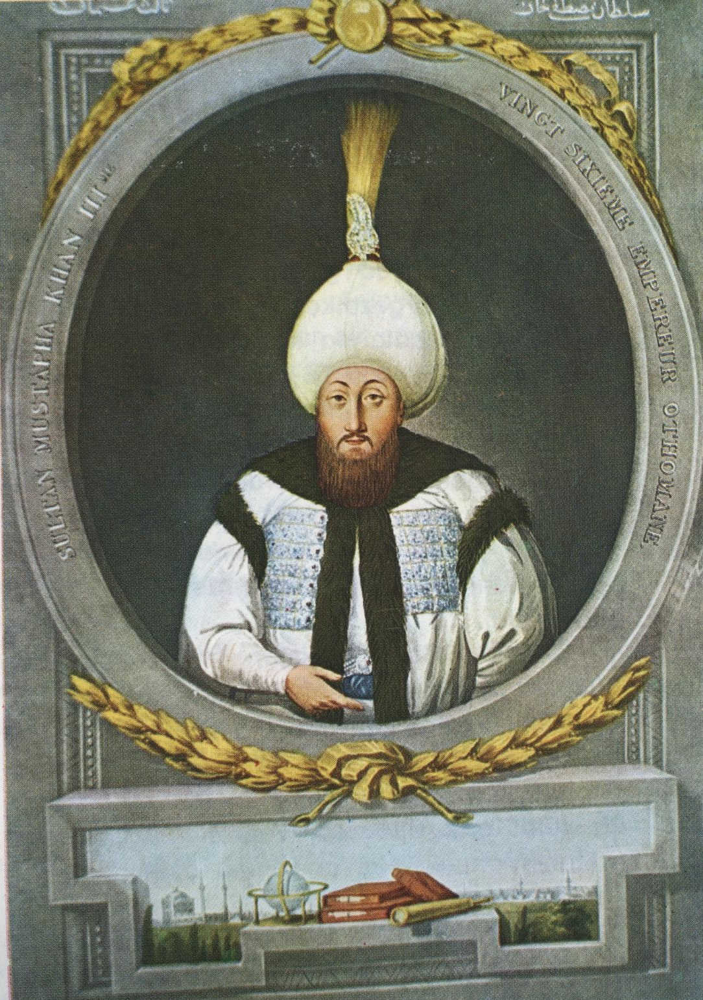

| önceki |  |
sonraki |
III. Mustafa, Osmanlı İmparatorluğu'nun yirmi altıncı padişahıdır. Babası III. Ahmed, annesi Mihrişah Sultan'dır. Bilime, tıbba, astrolojiye ve ordu ıslahatına büyük önem veren, devleti çağdaşlaştırmak için gayret sarf eden çalışkan ve yenilikçi bir hükümdardır. Sadrazamı ve devrin büyük şairi Koca Râgıp Paşa ile birlikte uzun yıllar iç barışı korumuştur.
Askerî Islahatlar ve Çeşme Baskını
- Mühendishâne-i Bahrî-i Hümâyun (1773): Deniz subayı ve mühendis yetiştirmek amacıyla günümüzdeki İstanbul Teknik Üniversitesi (İTÜ) ve Deniz Harp Okulu'nun temeli olan modern deniz mühendislik okulunu kurmuştur.
- Sür'at Topçuları Ocağı: Fransız asıllı Macar subay Baron de Tott'un danışmanlığında top dökümhaneleri ıslah edilmiş ve modern toplarla donatılan Sürat Topçuları Ocağı kurulmuştur. Boğaz kaleleri tahkim edilmiştir.
- 1768 – 1774 Osmanlı-Rus Savaşı: Rus Çariçesi II. Katerina'nın Lehistan'a müdahalesi ve Kırım sınırlarını tehdit etmesi üzerine Osmanlı Devleti Rusya'ya savaş ilan etmiştir. Ancak bu savaş Osmanlı için büyük bir felakete dönüşmüştür.
- Çeşme Deniz Faciası (1770): Baltık Denizi'nden Cebelitarık'ı aşarak ilk kez Akdeniz'e inen Rus donanması, İzmir Çeşme Limanı'nda demirli bulunan Osmanlı donanmasını ani bir baskınla tamamen yakmıştır.
- İmar Faaliyetleri: İstanbul'da ünlü Lâleli Camii ve Üsküdar Ayazma Camii'ni inşa ettirmiştir. 1766 yılındaki büyük İstanbul depreminde yıkılan Fatih Camii'ni baştan sona yeniden yaptırmıştır.
- Vefatı: Rus savaşının aleyhte seyretmesi ve Kartal Meydan Muharebesi yenilgisinin verdiği derin üzüntü sebebiyle 1774 yılında kalp krizinden vefat etmiştir.
Ailesi
- Eşleri:
- Mihrişah Vâlide Sultân (III. Selim'in annesi)
- Aynülhayat Kadın
- Adilşah Kadın
- Rif'at Kadın
- Erkek çocukları:
- III. Selim (1761 – 1808)
- Şehzade Mehmed (1767 – 1772)
- Kız çocukları:
- Şah Sultân
- Beyhan Sultân
- Hatice Sultân
- Hibetullah Sultân
III. Mustafa hakkında daha fazla bilgi için buraya tıklayın.